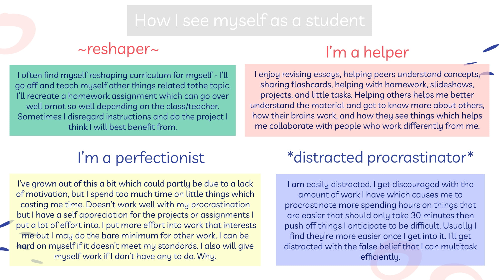

Najorae is a recent high school graduate who studied Audio Production & Engineering following 6 years of Vocal Music. At 3 years old, Najorae wrote and recorded their first song which was put on HBO's documentary ¨Family is a Family.¨ Since then they have written, composed, recorded, produced, arranged, sung, mixed, and mastered their own and other´s music along with working on podcasts, sound for short films, and audio books on Logic Pro X and Pro Tools. They have performed with OSA choirs at the Fox Theater, was the lead in Starmites run by Bay Area Zeta Players, has performed with Young Gifted & Black, and have recorded for and performed with their dad who intermixes science with Hip-Hop.
Najorae was in an organization for young Black girls where they planned the Black Girls March Oakland. At OSA, they have led the Queer & Trans Club for three years and are on the Board of Students of Color. With Zeta Phi Beta, Najorae has volunteered to help feed the homeless. They also attended a 10 week High School Engineering Program with UC Berkeley where they cultivated an environmentally friendly, community oriented tiny homes project on AutoCAD for unhoused communities. On scratch, with block based coding, Najorae created their first game, The Adventures of Starbuck of Stanley, incorporating a self made soundtrack, which led to teaching a few Block Based Coding workshops to Black youth. Najorae plans to create their second video game on Unity, expand their knowledge of coding languages, and release an album or EP.
